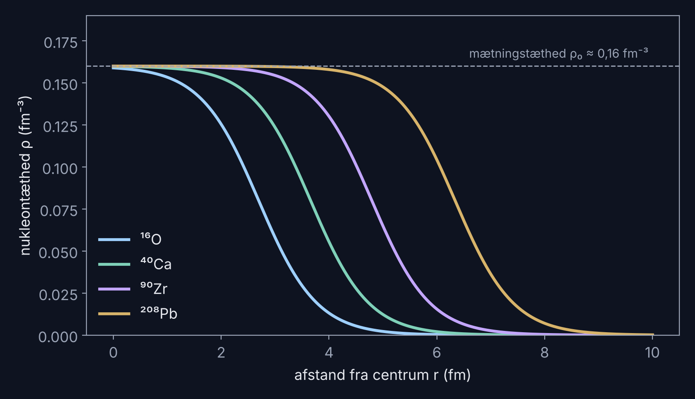
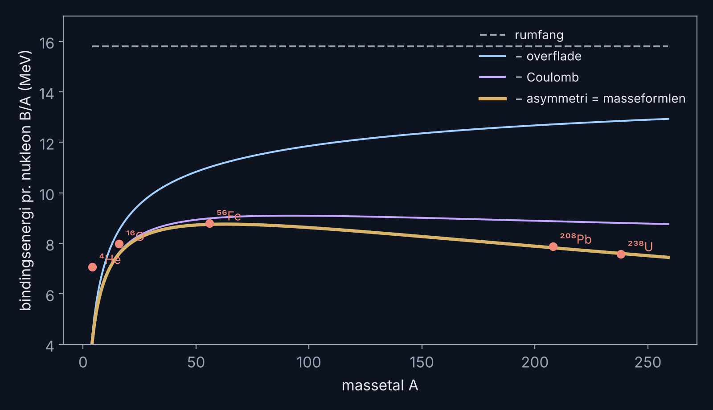
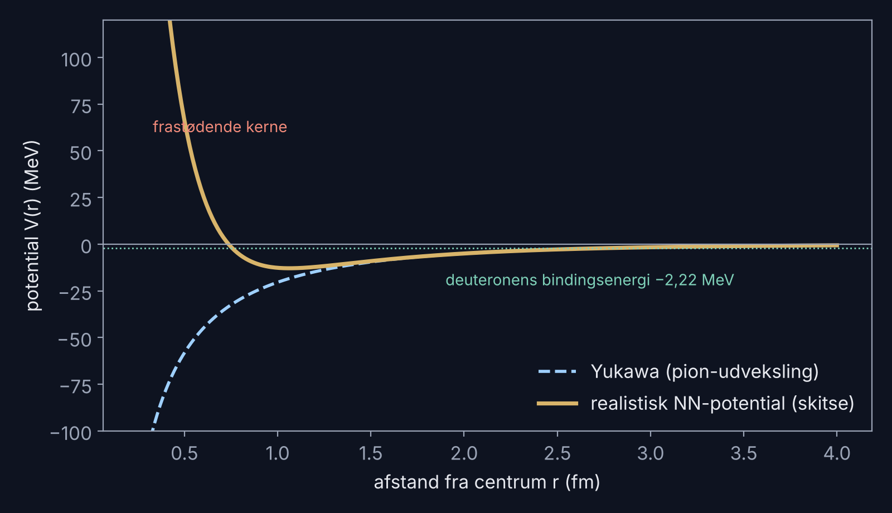
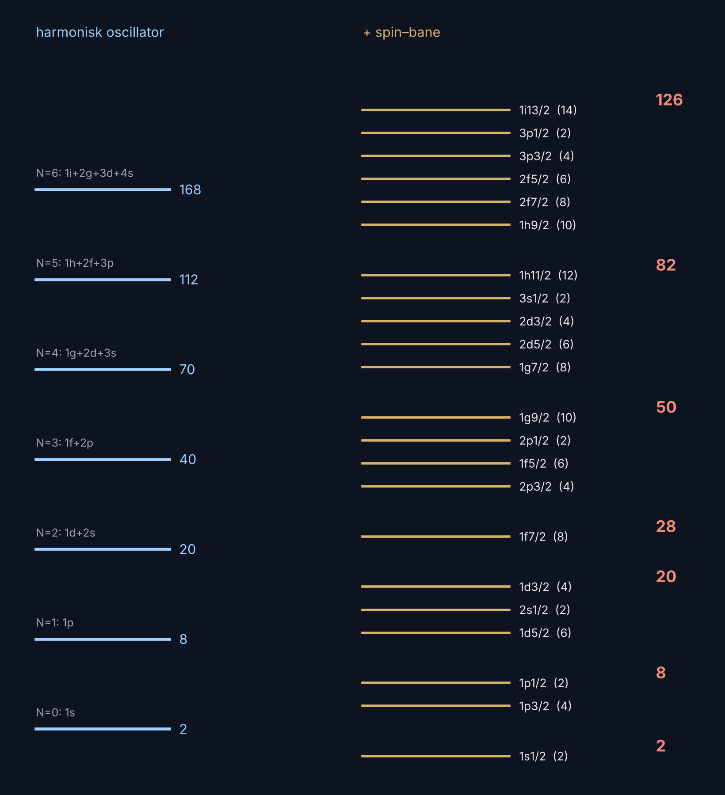

Den tætpakkede kerne
Rutherfords spredningsforsøg viste i 1911, at kernen er lille. Hvor lille, og hvordan stoffet er fordelt inde i den, viste Robert Hofstadter i 1950’erne ved Stanford. Han skød elektroner med en energi på flere hundrede MeV mod kerner. Elektronen mærker ikke kernekraften, kun den elektriske ladning, og dens bølgelængde var kort nok til at »se« ladningens fordeling. Resultatet var overraskende enkelt: alle kerner har en næsten konstant tæthed i midten, der falder til nul over en overfladezone på et par femtometer. Fordelingen beskrives godt med en Fermi-funktion
Hofstadter fik Nobelprisen i 1961. Figuren viser fordelingen for fire kerner. Det bemærkelsesværdige er, at plateauet ligger i samme højde for dem alle: mætningstætheden

Det er præcis, hvad man ser i en væske eller i en bunke tætpakkede kugler: lægger man flere kugler til, vokser bunken, men den bliver ikke tættere. Rumfanget er proportionalt med antallet af nukleoner, $V \propto A$, og derfor er radius $R \propto A^{1/3}$. En blykerne med 208 nukleoner er kun $\sqrt[3]{208/16} \approx 2{,}35$ gange så bred som en iltkerne.
Afstanden mellem naboer i kernen er $\rho_0^{-1/3} \approx 1{,}8$ fm. En proton har selv en ladningsradius på 0,84 fm. Regner man nukleonerne som kugler med den radius, fylder de omkring 40 % af kernens rumfang – mindre end tætpakkede kugler (74 %), men så tæt, at nukleonerne næsten rører hinanden. Kernen er et tætpakket stof, ikke en tynd gas af punktpartikler.
Mætning: hvorfor bindingsenergien vokser med A
Hvis hver nukleon tiltrak alle de andre, ville antallet af par være $A(A-1)/2$, og bindingsenergien ville vokse som $A^2$. Men målingerne viser, at bindingsenergien pr. nukleon er næsten konstant, omkring 8 MeV, fra ilt til uran. Hver nukleon mærker altså kun sine nærmeste naboer. Kraften mættes, ligesom en vanddråbe: ét vandmolekyle binder kun til dem, det rører.
Billedet af tætpakkede kugler forklarer også masseformlens næste led. I en kuglepakning har hver kugle inde i bunken 12 naboer, men kuglerne i overfladen mangler nogle af dem. Derfor bindes overfladenukleonerne svagere, og bindingsenergien får et negativt overfladeled proportionalt med overfladearealet, $4\pi R^2 \propto A^{2/3}$. Det er de to første led i Weizsäckers masseformel:
| Led | Typisk værdi | Fysisk oprindelse |
|---|---|---|
| $a_V$ | 15,8 MeV | hver nukleon bindes til sine naboer (mætning) |
| $a_S$ | 18,3 MeV | overfladenukleoner mangler naboer |
| $a_C$ | 0,714 MeV | protonernes elektriske frastødning, som ikke mættes |
| $a_A$ | 23,2 MeV | Pauli-princippet: neutroner og protoner fylder hver deres niveauer |
| $\delta$ | $\approx 12/\sqrt{A}$ MeV | nukleoner af samme slags danner par |

Bemærk forskellen på Coulomb-leddet og de andre. Den elektriske kraft har uendelig rækkevidde, så hver proton frastøder alle de andre – derfor vokser leddet med $Z^2$, ikke med $Z$. Netop fordi kernekraften mættes og den elektriske kraft ikke gør, kan der ikke findes vilkårligt tunge kerner. Over uran bliver frastødningen så stor, at kernerne spaltes spontant eller henfalder med alfastråling.
Fermi-gassen: nukleoner i en kasse
Hvorfor falder kernen ikke sammen, når nukleonerne tiltrækker hinanden? Et første svar giver Pauli-princippet. Nukleonerne er fermioner, og to af samme slags kan ikke være i samme tilstand. Betragter man kernen som en kasse med rumfanget $V$, hvor $A/2$ protoner og $A/2$ neutroner bevæger sig frit, må de fylde impulstilstandene op til en Fermi-impuls $p_F = \hbar k_F$:
Faktoren 2 er de to spinretninger. Fermi-energien bliver
og nukleonernes gennemsnitlige kinetiske energi er $\tfrac35 E_F \approx 22$ MeV. Nukleonerne farer altså rundt i kernen med omkring en femtedel af lysets fart. Da den sidste nukleon er bundet med omkring 8 MeV, må potentialbrønden være $37 + 8 \approx 45$ MeV dyb. Fermi-gassen forklarer også asymmetrileddet: har en kerne flere neutroner end protoner, må de ekstra neutroner placeres i højere niveauer, og det koster energi.
Den kortrækkende kernekraft
Kernekraften er den stærkeste kraft, vi kender i kernefysikken, men den har en mærkelig egenskab: den er nærmest nul i en afstand på 3–4 fm. To protoner i en kerne ligger kun et par femtometer fra hinanden, og ved den afstand er den elektriske frastødning omkring $e^2/(4\pi\varepsilon_0 r) \approx 1{,}44\ \mathrm{MeV\,fm}/2\ \mathrm{fm} \approx 0{,}7$ MeV. Kernekraften er mange gange stærkere. Men selv mellem to kerner, der næsten rører hinanden, mærkes den ikke.
Yukawas idé
I 1935 foreslog den 28-årige japanske fysiker Hideki Yukawa en forklaring. Den elektriske kraft formidles af fotoner, der er masseløse og derfor kan nå uendelig langt. Hvis kernekraften formidles af en partikel med masse $m$, kan den kun eksistere »på lån«: ifølge ubestemthedsrelationen kan energien $mc^2$ lånes i tiden $\Delta t \approx \hbar/(mc^2)$, og i den tid når partiklen højst afstanden
Kraftens rækkevidde bestemmer altså partiklens masse. Yukawa udledte, at potentialet mellem to nukleoner så skal have formen
Ved små afstande ligner det et Coulomb-potential, men eksponentialfaktoren dræber det hurtigt: i en afstand på 5 fm er det svækket med en faktor $e^{-5/1{,}41} \approx 0{,}03$ ud over $1/r$. Partiklen, pionen, blev fundet i 1947 af Cecil Powell i kosmisk stråling med en masse på 140 MeV/$c^2$, og Yukawa fik Nobelprisen i 1949 – den første japaner, der fik den.

Den frastødende kerne
Spredningsforsøg med protoner viste i 1951 (Robert Jastrow), at kraften skifter fortegn ved meget små afstande: under ca. 0,5 fm frastøder nukleonerne hinanden kraftigt. Sammen med Pauli-princippet er det den frastødende kerne, der får kernestoffet til at mættes ved $\rho_0$. Nukleonerne kan ikke presses tættere sammen, ligesom kuglerne i en kuglepakning. I dag forstår man det i kvantekromodynamikken: når to nukleoners kvarker overlapper, giver Pauli-princippet for kvarkerne og udveksling af tungere mesoner (ω-mesonen) en frastødning.
Kraften afhænger af spin – og ikke af ladning
Kernekraften er ikke bare en simpel funktion af afstanden. Den er stærkere, når de to nukleoners spin er parallelle, og den har et tensorled, der afhænger af vinklen mellem spinnene og forbindelseslinjen – det samme slags led, man kender fra to stangmagneter. Til gengæld er den næsten den samme mellem proton–proton, proton–neutron og neutron–neutron. Werner Heisenberg foreslog i 1932, at proton og neutron kan opfattes som to tilstande af samme partikel, nukleonen, med en ny kvantestørrelse, isospin. Spejlkerner som ³H og ³He, hvor man bytter protoner og neutroner, har næsten samme energiniveauer – forskellen er netop Coulomb-energien.
Deuteronet – den eneste bundne topartikel
Den simpleste kerne, deuteronet (en proton og en neutron), er et godt laboratorium for kernekraften. Det har kun én bunden tilstand med bindingsenergien 2,224 MeV, spin 1 og en radius på omkring 2,1 fm – stort i forhold til kraftens rækkevidde. Deuteronet er så løst bundet, at nukleonerne tilbringer det meste af tiden uden for hinandens rækkevidde. Der findes ingen bunden tilstand af to neutroner eller to protoner: med modsatte spin, som Pauli-princippet kræver for to ens nukleoner i grundtilstanden, er kraften lige akkurat for svag.
Man kan vurdere, hvor dyb brønden mindst skal være. For en sfærisk firkantbrønd med radius $R$ og dybde $V_0$ findes der kun en bunden tilstand, hvis bølgefunktionen kan nå at bøje en kvart bølgelængde inden for brønden, dvs. $kR \ge \pi/2$, hvor $\hbar^2k^2/2\mu = V_0$ og $\mu = m/2$ er den reducerede masse:
Den virkelige dybde, tilpasset bindingsenergien, er omkring 35 MeV – kun lidt over grænsen. Deuteronet er bundet med en hårsbredde. Deuteronet har desuden et lille elektrisk kvadrupolmoment: det er en smule aflangt. Det kan kun forklares, hvis bølgefunktionen indeholder omkring 4–6 % D-tilstand (impulsmoment 2), og det er det direkte bevis for tensorleddet i kernekraften.
Magiske tal og skalmodellen
Masseformlen beskriver de store linjer, men den overser noget. Kerner med bestemte antal protoner eller neutroner – 2, 8, 20, 28, 50, 82 og 126 – er bundet stærkere end formlen siger, har flere stabile isotoper og er sværere at excitere. Fysikeren Eugene Wigner kaldte dem spøgefuldt de magiske tal, og navnet hang ved. De minder om ædelgassernes elektrontal, 2, 10, 18, 36, 54, 86, og det er ikke tilfældigt: også nukleonerne ordner sig i skaller.
Første forsøg: den harmoniske oscillator
Inde i kernen mærker hver nukleon et gennemsnitsfelt fra de andre. Fordi tætheden er konstant, ligner potentialet en skål, og den simpleste skål er den harmoniske oscillator, $V(r) = \tfrac12 m\omega^2 r^2$. Dens energiniveauer er $E_N = \hbar\omega(N + \tfrac32)$, og niveau $N$ har plads til
Lagt sammen giver det skallerne 2, 8, 20, 40, 70, 112, 168. De tre første passer – men derefter går det galt. Naturen siger 28, 50, 82, 126.
Spin–bane-koblingen
Løsningen fandt Maria Goeppert Mayer i Chicago og uafhængigt Otto Haxel, Hans Jensen og Hans Suess i Heidelberg i 1949. Ifølge en kendt anekdote spurgte Enrico Fermi Goeppert Mayer i forbifarten, om der var tegn på spin–bane-kobling. Hun så straks, at det var nøglen. Ligesom elektronen i et atom kobler nukleonens spin $\vec s$ til dens baneimpulsmoment $\vec l$, men i kernen er koblingen meget stærkere og har modsat fortegn: tilstanden med $j = l + \tfrac12$ ligger lavest.
Spaltningen vokser med $l$. For de højeste $l$ i hver oscillatorskal bliver den så stor, at niveauet med $j = l + \tfrac12$ trykkes ned i skallen nedenunder. Niveauet $1f_{7/2}$ har plads til $2j + 1 = 8$ nukleoner og danner sin egen lille skal: $20 + 8 = 28$. På samme måde falder $1g_{9/2}$ (10 pladser) ned til den foregående skal, så $40 + 10 = 50$; $1h_{11/2}$ (12) giver $70 + 12 = 82$; og $1i_{13/2}$ (14) giver $112 + 14 = 126$. Alle syv magiske tal kommer ud af én simpel antagelse.

Goeppert Mayer og Jensen fik Nobelprisen i 1963 – hun som den anden kvinde i fysik, efter Marie Curie. Skalmodellen forklarer ikke kun de magiske tal, men også spin og magnetisk moment for kerner med én nukleon uden for en lukket skal. ¹⁷O har én neutron i $1d_{5/2}$ uden for den dobbeltmagiske ¹⁶O, og den har ganske rigtigt spin $\tfrac52$.
Sporene efter de magiske tal i naturen
- Mange stabile isotoper. Tin, med det magiske $Z = 50$, har ti stabile isotoper – flere end noget andet grundstof. Calcium ($Z = 20$) har seks.
- Spring i separationsenergien. Energien, der skal til for at fjerne én neutron, falder brat lige efter et magisk tal – præcis som ioniseringsenergien falder fra en ædelgas til det næste alkalimetal.
- Dobbeltmagiske kerner. ⁴He, ¹⁶O, ⁴⁰Ca, ⁴⁸Ca og ²⁰⁸Pb er usædvanligt stabile og kugleformede. Helium-4 er så stærkt bundet, at tunge kerner hellere udsender en hel heliumkerne (alfahenfald) end enkelte nukleoner. Bly-208 er endestationen for thoriums henfaldsrække.
- Guld og platin. I neutronstjernekollisioner indfanger kernerne neutroner hurtigt (r-processen) og hober sig op ved de magiske neutrontal $N = 50$, 82 og 126. Efter henfaldet giver det tre toppe i grundstoffernes hyppighed omkring $A \approx 80$, 130 og 195 – den sidste er platin og guld. Guldet i en vielsesring bærer stempel af det magiske tal 126.
- Kugleform og deformation. Kerner med lukkede skaller er kugleformede. Midt mellem skallerne bliver kernerne aflange og roterer, som Aage Bohr og Ben Mottelson viste i København (se den kollektive model).
Når de magiske tal flytter sig
I mange år troede man, at de magiske tal var universelle. Men med acceleratorer, der kan lave kerner langt fra stabilitetslinjen, har man fundet, at de kan forsvinde og nye kan opstå. Ved $N = 20$ er magnesium-32 ikke kugleformet, som det burde være – her ligger en »inversionens ø«, hvor niveauer fra den næste skal trænger ned. Til gengæld opfører calcium-52 og calcium-54 sig, som om $N = 32$ og $N = 34$ var magiske (RIKEN i Japan, 2013). Årsagen er, at tensorleddet i kernekraften flytter niveauerne, når forholdet mellem protoner og neutroner ændrer sig.
Ude i det tunge område forudsiger skalmodellen en stabilitetens ø omkring $Z \approx 114$–120 og $N = 184$, hvor supertunge kerner kunne leve meget længere end deres naboer. Grundstof 114 hedder flerovium efter laboratoriet i Dubna, hvor det blev lavet ved at skyde dobbeltmagisk calcium-48 mod plutonium. Ingen har endnu nået $N = 184$.
Fra atomkerne til neutronstjerne
Kernestoffet ved mætningstætheden er ikke kun en egenskab ved små kerner. En neutronstjerne er i en vis forstand én kæmpemæssig atomkerne, holdt sammen af tyngdekraften i stedet for kernekraften: omkring $10^{57}$ nukleoner, mest neutroner, med en radius på ca. 12 km. I centrum er tætheden to–tre gange $\rho_0$. Hvor stor en neutronstjerne kan blive, før den falder sammen til et sort hul, afhænger af, hvor stift kernestoffet er – af den frastødende kerne i kernekraften. Gravitationsbølgerne fra neutronstjernekollisionen i 2017 (GW170817) har givet de første direkte målinger af det.
Regner man med den konstante tæthed $\rho_0$, giver $R \propto N^{1/3}$ – den samme regel som for atomkerner – en radius på 14 km. Tyngdekraften presser stjernen lidt mere sammen, men størrelsesordenen er rigtig.
Opgaver
Svar: $R \approx 7{,}0$ fm; $\rho \approx 197\cdot1{,}66\cdot10^{-27}\ \mathrm{kg}/(\tfrac43\pi(7{,}0\cdot10^{-15}\ \mathrm{m})^3) \approx 2{,}3\cdot10^{17}$ kg/m³; en teskefuld vejer ca. $1\cdot10^{12}$ kg – en milliard tons.
Svar: $a = \hbar c/(m_Wc^2) = 197\ \mathrm{MeV\,fm}/80\,400\ \mathrm{MeV} \approx 0{,}0025$ fm – omkring en tusindedel af en protons størrelse. Derfor er den svage kraft »svag«.
Svar: I ⁴¹Ca sidder den sidste neutron alene i $1f_{7/2}$: spin $\tfrac72$. I ²⁰⁹Bi sidder den sidste proton alene uden for $Z = 82$, i $1h_{9/2}$: spin $\tfrac92$. Begge stemmer med målingerne.
Læs mere
- Kenneth S. Krane: Introductory Nuclear Physics (Wiley 1988) – kapitel 4 og 5 om kernekraften og skalmodellen
- Maria Goeppert Mayer: »The shell model«, Nobelforedrag 1963 (nobelprize.org)
- Hideki Yukawa: »On the interaction of elementary particles«, Proc. Phys.-Math. Soc. Japan 17 (1935)
- Aage Bohr og Ben Mottelson: Nuclear Structure I–II (1969, 1975)
- Videre på mhgfysik.dk: Kernefysik – atomets hjerte, Partikelfysik og gruppeteori, Lise Meitner, Enrico Fermi, Niels Bohr